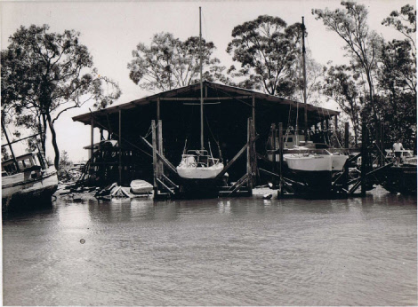

History
Founded in the 1950's by boatbuilder Clem Masters, Deagon Slipways has seen a huge range of boats go through her doors.
During its early years, the yard was responsible for the creation of the "Masters" motor boat, as well as being the location where 3 of the classic "Tasman Seabird" yachts were constructed; these being Safari, Pagan and Carousel.
Before the construction of a dedicated clubhouse, the yard was used to host many events for the local yachting community.
Over its lifetime, the slipway has trained numerous apprentices that have gone on to become experts in their fields.